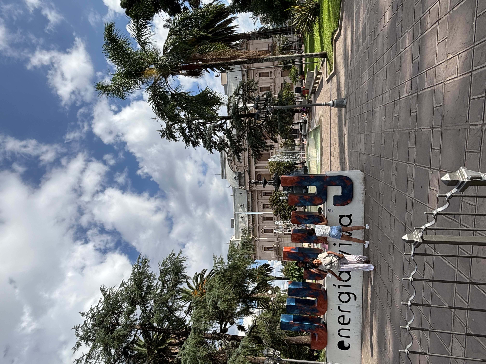

Top Three Places to Visit in Jujuy, Argentina
About Jujuy
Jujuy is a province in the far northwest of Argentina, bordering Bolivia and Chile. It's known for its dramatic Andean landscapes,
including the colorful Quebrada de Humahuaca (a UNESCO World Heritage Site) and the vast salt flats of the Puna region.
-
San Salvador de Jujuy  -
Purmamarca 
-
Tilcara 
Back to Top
Disclaimer: All the photos, except for the map, were taken by me.